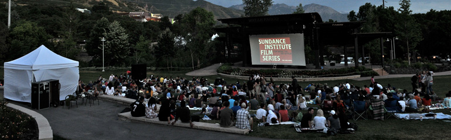
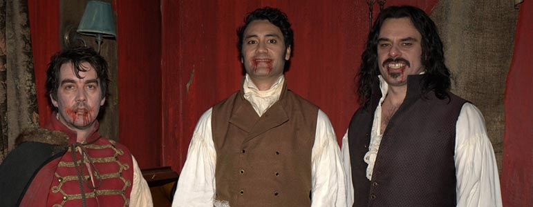
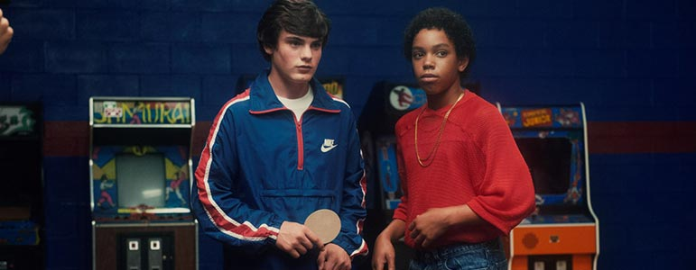
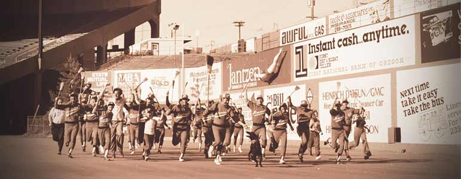
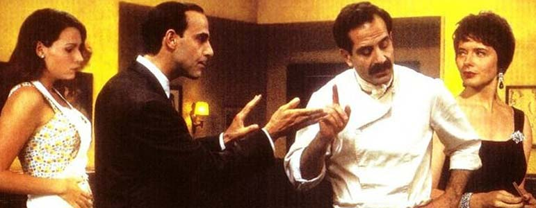
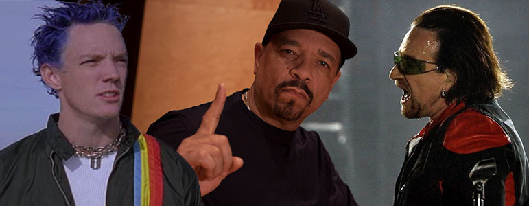

Sundance Institute Public Programming

Photo taken by Jill Orschel
VOTE FOR THE 2014 COMMUNITY CHOICE SCREENING
Step into the world of the Sundance Institute Artist Programs. From screenings and script readings to musical performances and discussions, we showcase work supported by Sundance Institute and give you an opportunity to meet the artists and discuss their work. These events are FREE and open to the public.
TWENTY FEET FROM STARDOM (click for trailer)
Directed by Morgan Neville
91 min., color, U.S.A., 2013 Sundance Film Festival Official Selection
2014 Academy Award winner
Free Outdoor Screenings
Tuesday, July 8, 9:30 p.m., Red Butte Amphitheatre, Salt Lake City, UT
Friday, August 1, 9 p.m., City Park, Park City, UT
*Presented in collaboration with the Kimball Arts Festival and Park City Institute
Backup singers live in a world that lies just beyond the spotlight. Their voices bring harmony to the biggest bands in popular music, but we’ve had no idea who these singers are or what lives they lead — until now.

WHAT WE DO IN THE SHADOWS (click for trailer)
Directed by Taika Waititi and Jemaine Clement
86 min., color, New Zealand/United States, 2014 Sundance Film Festival Official Selection
Free Outdoor Screening
Tuesday, July 15, 9 p.m., Red Butte Amphitheatre, Salt Lake City, UT
Presented in celebration of the 20th Anniversary of Sundance Institute’s Native and Indigenous Program
This mockumentary follows the struggles of a group of New Zealand-based vampires to understand modern society and adapt to the ever-changing world around them.

PING PONG SUMMER (click for trailer)
Directed by Michael Tully
92 min., color, U.S.A., 2014 Sundance Film Festival Official Selection
Free Outdoor Screening
Friday, July 25, 9 p.m., City Park, Park City, UT
Presented in collaboration with Park City Recreation
1985. Ocean City, Maryland. Summer vacation. Rap music. Parachute pants. Ping pong. First crushes. Best friends. Mean bullies. Weird mentors. That awkward, momentous time in your life when you're treated like an alien by everyone around you, even though you know deep down you're as funky fresh as it gets.

THE BATTERED BASTARDS OF BASEBALL (click for trailer)
Directed by Chapman Way and Maclain Way
73 min., color, U.S.A., 2014 Sundance Film Festival Official Selection
Free Outdoor Screening
Wednesday, August 13, 9 p.m., Red Butte Amphitheatre, Salt Lake City, UT
*Come early! Filmmaker Maclain Way to attend and participate in a guided pre-screening discussion!
Hollywood veteran Bing Russell creates the only independent baseball team in the country – alarming the baseball establishment and sparking the meteoric rise of the 1970s Portland Mavericks.

BIG NIGHT (click for trailer)
Directed by Campbell Scott and Stanley Tucci
107 min., color, U.S.A., 1996 Sundance Film Festival Official Selection, Waldo Salt Screenwriting Award
Free Outdoor Screening
Friday, August 15, 9 p.m., City Park, Park City, UT
*Film presented in classic 35 mm. Presented in collaboration with Park City Chamber of Commerce/Convention & Visitors Bureau for the first-ever Park City Grub Crawl created by bon appétit Magazine.
A failing Italian restaurant run by two brothers gambles on one special night to try to save the business.
GOD HELP THE GIRL
Directed by Stuart Murdoch
111 min., color, United Kingdom, 2014 Sundance Film Festival Official Selection, World Cinema Dramatic Special Jury Award for Ensemble Performance
Free Outdoor Screening
Wednesday, August 20, 8:45 p.m., Red Butte Amphitheatre, Salt Lake City, UT
This musical from Stuart Murdoch of Belle and Sebastian is about some messed-up boys and girls and the music they make.

COMMUNITY CHOICE Film - To Be Decided by YOU!
Free Outdoor Screening
Wednesday, August 27, 9 p.m., Red Butte Amphitheatre, Salt Lake City, UT
Back by popular demand! Sundance Institute wants YOU to select the final film of our Summer Series. Vote now for your favorite film from past Sundance Film Festival crowd pleasers and cult classics. Click below to see the trailer for each film.
Sundance Institute gratefully acknowledges the generous support of Community Supporters:
Red Butte Garden , Salt Lake City Arts Council
If you are interested in partnering with Sundance Institute to put on a community event, please fill out the application here and email it to UtahCommunity@Sundance.org.